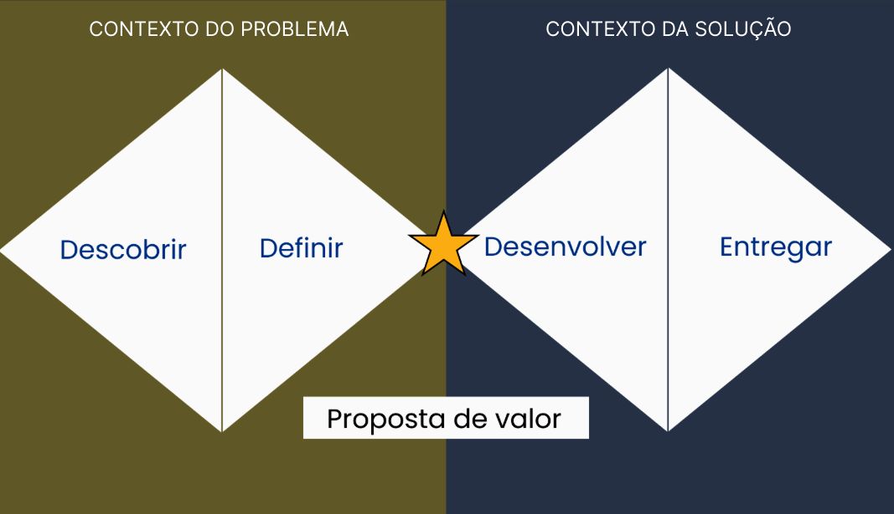
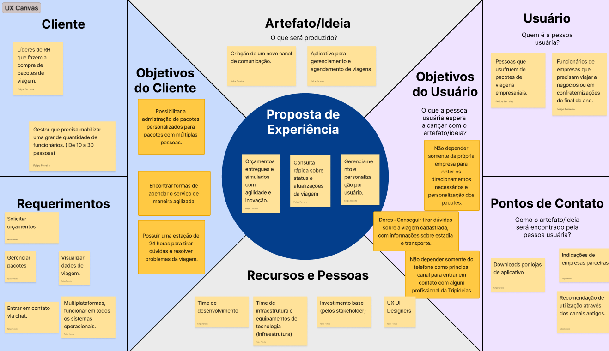
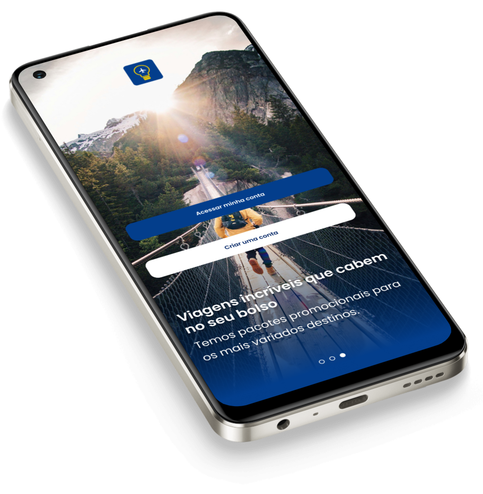
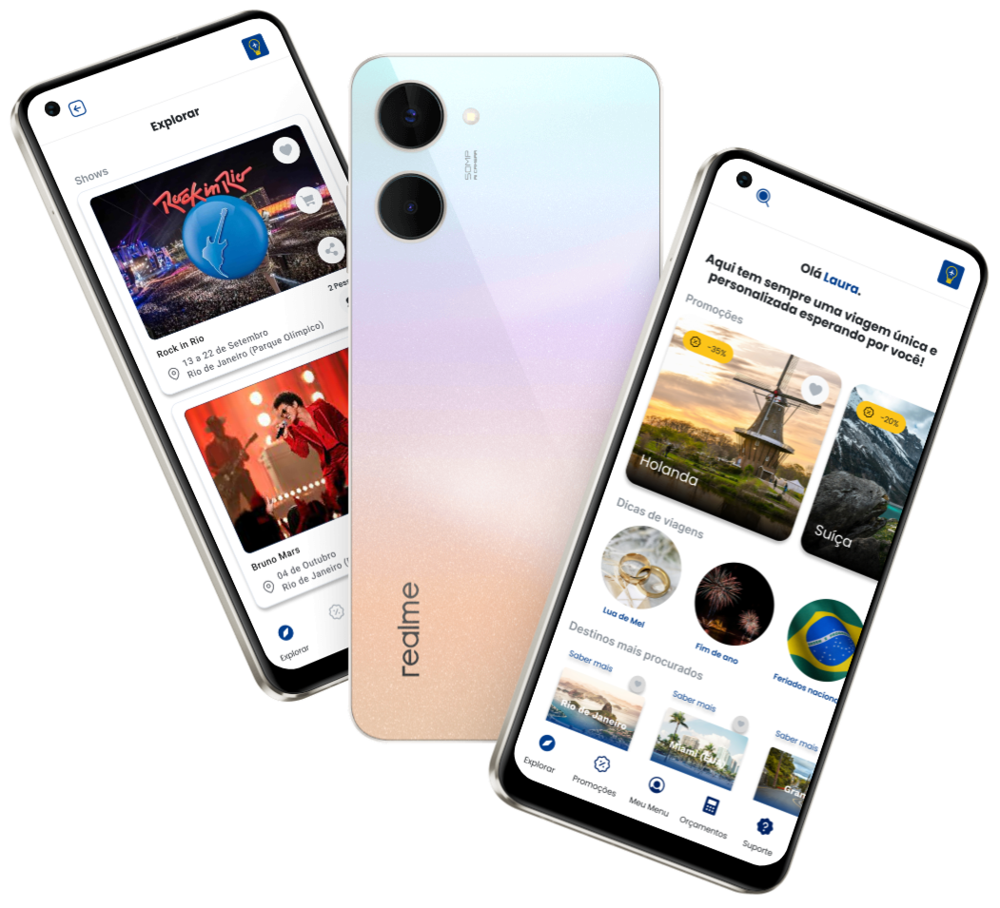

Tripideias
Visão Geral
Tripideias é uma agência de viagens que vende pacotes de viagem personalizados, tudo para oferecer uma experiência única aos seus clientes.
Categoria
Função
Introdução ao projeto
Este caso documenta o processo de melhoria da experiência de usuários que precisam fazer viagens corporativas, que chamaremos de Usuário business neste contexto. Trabalhei como Designer UX/UI e Gerente de Projeto passando pelo projeto desde a imersão, pesquisa, definição e entrega.
Cenário atual
Na Tripideias, o cliente direto é o gestor responsável por solicitar a viagem personalizada, e nossos usuários finais são os membros de sua equipe que utilizam os serviços do pacote de viagem.
Problemas encontrados
Orçamentos atrasados prejudicando as vendas.
Atendimento lento, já que cada usuário tem um pacote personalizado.
Clientes precisam fazer várias solicitações individualmente para usuários (membros da equipe).
Desafio
Melhorar a visualização do itinerário e cronograma de cada viagem personalizada solicitada pelos clientes, reduzindo as interações com o pessoal de atendimento e aumentando a adoção de pacotes.
Processo de Design
Seguindo a abordagem Double Diamond, dividimos o projeto em 3 grandes entregas

Contexto do problema
Etapa onde realizamos pesquisa e análise de dados de mercado. Compreendendo o perfil de uso, pontos de dor do cliente, pontos de dor do usuário e gerando personas.
Proposta de valor
Visão estratégica de como usamos UX para resolver pontos de dor do usuário e ser rentável para a empresa. Como entregas para esta etapa, criamos o canvas de proposta de valor e o canvas UX, sempre buscando o equilíbrio entre usuário e negócio.
Contexto da solução
Momento em que desenvolvemos a proposta de resolução do produto.
Conhecendo o usuário
Para este projeto, era importante entender se o que foi declarado como um problema para o usuário era realmente um problema ou apenas um sintoma.
Com base em pesquisa quantitativa, foram criadas personas para cada tipo de perfil de usuário.


Estratégia
Tão importante quanto ouvir os pontos de dor dos usuários foi entender como a empresa poderia lucrar com a venda de mais pacotes de viagem. Para obter essa visão estratégica, realizei uma dinâmica para construir o Canvas UX.

Acesse o figjam e saiba maisSolução
Após passar pela perspectiva do usuário, começamos a projetar a solução para os problemas propostos. Para isso, foi realizado um processo co-criativo com outras pessoas do squad (PM e DFVs), o fluxo de interação das telas, testes de usabilidade até chegar ao protótipo navegável que foi entregue à equipe de desenvolvimento.
Etapa de prototipagem
Após ter a proposta de solução definida, comecei a prototipar as telas do software Tripideias.

